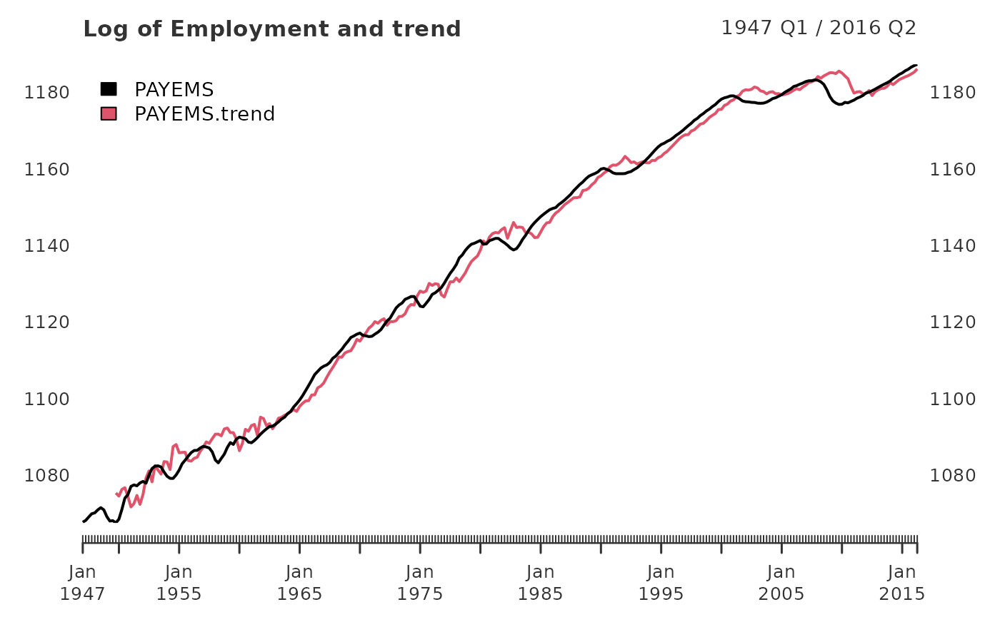
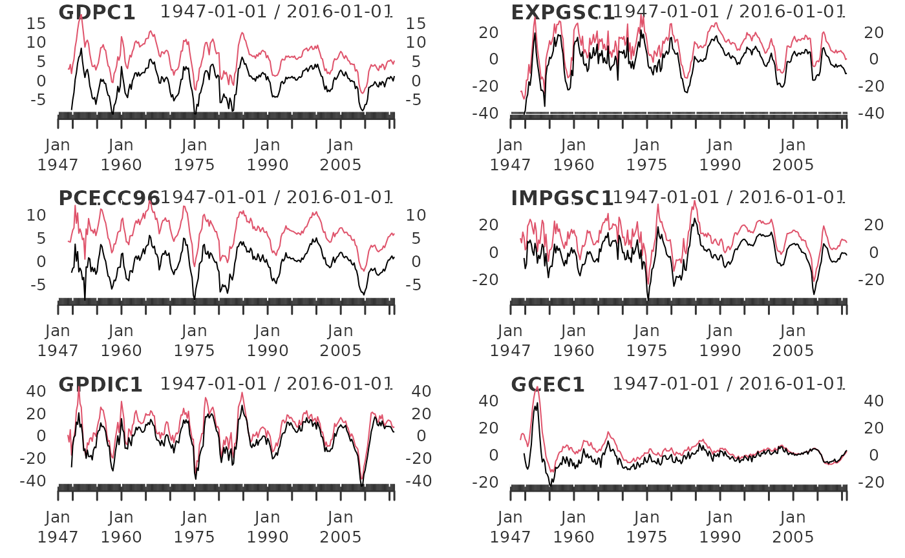

Reproducing Hamilton
Justin M Shea
Source:vignettes/Reproducing-Hamilton.Rmd
Reproducing-Hamilton.RmdIn the working paper titled “Why You Should Never Use the
Hodrick-Prescott Filter”, James D.
Hamilton proposes an interesting new alternative to economic time series
filtering. The neverhpfilter package
provides functions for implementing his solution. Hamilton (2017)
<doi:10.3386/w23429>
Hamilton’s abstract offers an excellent introduction to the problem and alternative solution:
- The HP filter produces series with spurious dynamic relations that have no basis in the underlying data-generating process.
- Filtered values at the end of the sample are very different from those in the middle, and are also characterized by spurious dynamics.
- A statistical formalization of the problem typically produces values for the smoothing parameter vastly at odds with common practice, e.g., a value for far below 1600 for quarterly data.
- There’s a better alternative. A regression of the variable at date on the four most recent values as of date offers a robust approach to detrending that achieves all the objectives sought by users of the HP filter with none of its drawbacks.
Using quarterly economic data, Hamilton suggests a linear model on a univariate time series shifted ahead by h periods, regressed against a series of variables constructed from varying lags of the series by some number of periods, p. A modified auto-regressive model, dependent on a look-ahead, if you will. This is expressed more specifically by:
Which can be rewritten as:
Implementation
First, lets run the yth_filter on Real GDP using the
default settings suggested by Hamilton of an
look-ahead period (2 years) and
lags (1 year). The output is displayed below containing the original
series, trend, cycle, and random components.
The random component is simply the difference between the original
series and its
look ahead, which is why it leads 8 NA observations. Due to
the
and
parameters, trend and cycle components lead with 11 NA
observations.
data(GDPC1)
gdp_filter <- yth_filter(100*log(GDPC1), h = 8, p = 4)
head(data.frame(Date=index(gdp_filter), coredata(gdp_filter)), 15)## Date GDPC1 GDPC1.trend GDPC1.cycle GDPC1.random
## 1 1947-01-01 768.8309 NA NA NA
## 2 1947-04-01 768.5653 NA NA NA
## 3 1947-07-01 768.3603 NA NA NA
## 4 1947-10-01 769.9141 NA NA NA
## 5 1948-01-01 771.4089 NA NA NA
## 6 1948-04-01 773.0478 NA NA NA
## 7 1948-07-01 773.6207 NA NA NA
## 8 1948-10-01 773.7339 NA NA NA
## 9 1949-01-01 772.3477 NA NA 3.516789
## 10 1949-04-01 772.0075 NA NA 3.442130
## 11 1949-07-01 773.0361 NA NA 4.675851
## 12 1949-10-01 772.1948 779.1321 -6.9373485 2.280665
## 13 1950-01-01 776.0511 780.3038 -4.2526309 4.642219
## 14 1950-04-01 779.0565 781.5229 -2.4664958 6.008660
## 15 1950-07-01 782.8487 782.1703 0.6783457 9.228028Comparing our estimates with Hamilton’s
In this next section, I reproduce a few of Hamilton’s tables and graphs, to make sure the functions approximately match his results.
In the Appendix, Employment (All Employees: Total Non-farm series) is
plotted in the form of
PAYEMS
and superimposed with it’s random walk representation. (Hamilton 44).
There are many good reasons to use xts when handling time
series data. Two of them are illustrated below in efficiently
transforming monthly series to.quarterly and in
ploting the results of yth_filter.
data(PAYEMS)
log_Employment <- 100*log(xts::to.quarterly(PAYEMS["1947/2016-6"], OHLC = FALSE))
employ_trend <- yth_filter(log_Employment, h = 8, p = 4, output = c("x", "trend"), family = gaussian)
plot.xts(employ_trend, grid.col = "white", legend.loc = "topleft", main = "Log of Employment and trend")
When filtering time series, the cycle component is of great interest. Here, it is graphed alongside a random walk representation (Hamilton 44).
employ_cycle <- yth_filter(log_Employment, h = 8, p = 4, output = c("cycle", "random"), family = gaussian)
plot.xts(employ_cycle, grid.col = "white", legend.loc = "topright", main="Log of Employment cycle and random")
abline(h=0)
Turning the page, we find a similar graph of the cyclical component of of GDP, Exports, Consumption, Imports, Investment, and Government (Hamilton 45).
Below I merge these data into one xts
object and write a function wrapper around yth_filter and
plot, which is then lapply’d over each series,
producing a plot for each one.
fig6_data <- 100*log(merge(GDPC1, EXPGSC1, PCECC96, IMPGSC1, GPDIC1, GCEC1)["1947/2016-3"])
fig6_wrapper <- function(x, ...) {
cycle <- yth_filter(x, h = 8, p = 4, output = c("cycle", "random"), family = gaussian)
plot.xts(cycle, grid.col = "white", lwd=1, main = names(x))
}
When striving to recreate a statistical method found in a journal or paper, one can perform surprisingly well by thoroughly digesting the relevant sections and “eyeballing” graphs included in the original author’s work.
Better still, is finding a table presenting said author’s estimates,
which one can use to directly compare with their own. Fortunately for
us, Hamilton’s Appendix displays such a table which I use here to test
against functions contained in
neverhpfilter.
His results are displayed below in table 2 (Hamilton 40), which I’ve
stored as a data.frame in this package.
data("Hamilton_table_2")
?Hamilton_table_2
Hamilton_table_2[-NROW(Hamilton_table_2),]## cycle.sd gdp.cor random.sd gdp.rand.cor Sample
## GDP 3.38 1.00 3.69 1.00 1947-1/2016-1
## Consumption 2.85 0.79 3.04 0.82 1947-1/2016-1
## Investment 13.19 0.84 13.74 0.80 1947-1/2016-1
## Exports 10.77 0.33 11.33 0.30 1947-1/2016-1
## Imports 9.79 0.77 9.98 0.75 1947-1/2016-1
## Government-spending 7.13 0.31 8.60 0.38 1947-1/2016-1
## Employment 3.09 0.85 3.32 0.85 1947-1/2016-2
## Unemployment-rate 1.44 -0.81 1.72 -0.79 1948-1/2016-2
## GDP-Deflator 2.99 0.04 4.11 -0.13 1947-1/2016-1
## S&P500 21.80 0.41 22.08 0.38 1950-1/2016-2
## 10-year-Treasury-yield 1.46 -0.05 1.51 0.08 1953-2/2016-2
## Fedfunds-rate 2.78 0.33 3.03 0.40 1954-3/2016-2I’ll replicate the table above, combining base R functions with
estimates of the yth_filter function.
The first step is to combine our economic time series into an object
that allows for convenient iteration of computations across all data of
interest. First, merge all series of quarterly frequency.
These are
GDPC1, PCECC96, GPDIC1, EXPGSC1, IMPGSC1, GCEC1, GDPDEF. At
this point, subset observations by the precise date range used by
Hamilton. At some point, all series which are measured in prices need to
be given the
treatment, so do this now.
quarterly_data <- 100*log(merge(GDPC1, PCECC96, GPDIC1, EXPGSC1, IMPGSC1, GCEC1, GDPDEF)["1947/2016-3"])Some economic time series we wish to compare are measured in monthly
periodicity, so we need to lower their frequency
to.quarterly. merge monthly series and
those expressed in prices. Leave data measured in percentages be. Then,
functionally iterate over every series and transform them
to.quarterly. Finally, all series are combined into one
xts object, I call quarterly_data.
monthly_data <- merge(100*log(PAYEMS), 100*log(SP500$SP500)["1950/"], UNRATENSA, GS10, FEDFUNDS)
to_quarterly_data <- do.call(merge, lapply(monthly_data, to.quarterly, OHLC = FALSE))["1947/2016-6"]
quarterly_data <- merge(quarterly_data, to_quarterly_data)Now its time to functionally iterate over each series. I do this by
lapplying the yth_filter to each series, while
iteratively mergeing results into one object with
do.call. The optional argument of
output = "cycle" is convenient here as it returns the
labeled univariate cycle component for each series. For example,
GDPCE1.cycle. The same approach is use to compute the
random component for each series as well.
cycle <- do.call(merge, lapply(quarterly_data, yth_filter, output = "cycle"))
random <- do.call(merge, lapply(quarterly_data, yth_filter, output = "random"))Now that all data have been transformed into both cycle
and random series, its time to estimate the standard
deviation for each, as well as each components correlation with
GDP. This is also a good opportunity to
transpose each of our estimates into vertical columned
data.frames, matching Hamilton’s format.
cycle.sd <- t(data.frame(lapply(cycle, sd, na.rm = TRUE)))
GDP.cor <- t(data.frame(lapply(cycle, cor, cycle[,1], use = "complete.obs")))
random.sd <- t(data.frame(lapply(random, sd, na.rm = TRUE)))
random.cor <- t(data.frame(lapply(random, cor, random[,1], use = "complete.obs")))
my_table_2 <- round(data.frame(cbind(cycle.sd, GDP.cor, random.sd, random.cor)), 2)Hamilton displays the date ranges of his samples, so we will do the
same, while keeping the xts date range syntax format. I use
a simple function I call sample_range to extract the first
and last observation of each series’ index.xts. This
approach serves as a check on the work, as oppose to manually creating
labels. Sample ranges are then transposed into vertical
data.frames and cbind’d to the existing table
of estimates.
sample_range <- function(x) {
x <- na.omit(x)
gsub(" ", "-", paste0(index(x[1,]), "/", index(x[NROW(x),])))
}
data_sample <- t(data.frame(lapply(quarterly_data, sample_range)))
my_table_2 <- cbind(my_table_2, data_sample)
names(my_table_2) <- names(Hamilton_table_2)Finally, rbind Hamilton’s table 2 with my table for a
visual comparison. The results are nearly identical, inspiring
confidence in the replication of the approach, as the functions of the
neverhpfilter package.
According to the ‘code and data’ link on the ‘Current Working
Papers’ page of Hamilton’s site, both Matlab and RATS were used for
computation of the table. It is not surprising that minor differences in
estimates would occur, likely due to differences in the underlying data
or internal computational choices made by each commercial software
product. While economic time series are publicly available and have a
central source at FRED, that
is not so for Standard & Poor’s index data. Unsurprisingly, the
SP500 data shows the most divergence, and it is not clear
what source was used in the original paper (though I have my suspicions
for future exploration).
Below, see Hamilton’s table 2 compared with estimates from
neverhpfilter::yth_filter, sorted by standard deviation of the cycle
component. yth_filter estimates are labeled with the suffix
.cycle
# Combined table
combined_table <- rbind(Hamilton_table_2[-NROW(Hamilton_table_2),], my_table_2)
combined_table[order(combined_table$cycle.sd),]## cycle.sd gdp.cor random.sd gdp.rand.cor
## Unemployment-rate 1.44 -0.81 1.72 -0.79
## UNRATENSA.cycle 1.44 -0.82 1.71 -0.80
## 10-year-Treasury-yield 1.46 -0.05 1.51 0.08
## GS10.cycle 1.46 -0.05 1.51 0.08
## Fedfunds-rate 2.78 0.33 3.03 0.40
## FEDFUNDS.cycle 2.78 0.33 3.03 0.41
## PCECC96.cycle 2.82 0.78 3.00 0.82
## Consumption 2.85 0.79 3.04 0.82
## GDP-Deflator 2.99 0.04 4.11 -0.13
## GDPDEF.cycle 3.01 0.03 4.13 -0.14
## Employment 3.09 0.85 3.32 0.85
## PAYEMS.cycle 3.09 0.85 3.32 0.85
## GDPC1.cycle 3.35 1.00 3.63 1.00
## GDP 3.38 1.00 3.69 1.00
## Government-spending 7.13 0.31 8.60 0.38
## GCEC1.cycle 7.16 0.32 8.59 0.38
## IMPGSC1.cycle 9.71 0.76 9.87 0.75
## Imports 9.79 0.77 9.98 0.75
## EXPGSC1.cycle 10.75 0.33 11.33 0.30
## Exports 10.77 0.33 11.33 0.30
## GPDIC1.cycle 13.18 0.83 13.67 0.78
## Investment 13.19 0.84 13.74 0.80
## SP500.cycle 21.38 0.42 21.60 0.40
## S&P500 21.80 0.41 22.08 0.38
## Sample
## Unemployment-rate 1948-1/2016-2
## UNRATENSA.cycle 1948-01-01/2016-04-01
## 10-year-Treasury-yield 1953-2/2016-2
## GS10.cycle 1953-04-01/2016-04-01
## Fedfunds-rate 1954-3/2016-2
## FEDFUNDS.cycle 1954-07-01/2016-04-01
## PCECC96.cycle 1947-01-01/2016-01-01
## Consumption 1947-1/2016-1
## GDP-Deflator 1947-1/2016-1
## GDPDEF.cycle 1947-01-01/2016-01-01
## Employment 1947-1/2016-2
## PAYEMS.cycle 1947-01-01/2016-04-01
## GDPC1.cycle 1947-01-01/2016-01-01
## GDP 1947-1/2016-1
## Government-spending 1947-1/2016-1
## GCEC1.cycle 1947-01-01/2016-01-01
## IMPGSC1.cycle 1947-01-01/2016-01-01
## Imports 1947-1/2016-1
## EXPGSC1.cycle 1947-01-01/2016-01-01
## Exports 1947-1/2016-1
## GPDIC1.cycle 1947-01-01/2016-01-01
## Investment 1947-1/2016-1
## SP500.cycle 1950-01-01/2016-04-01
## S&P500 1950-1/2016-2Summary
The estimates generated with the neverhpfilter package
are nearly identical to those displayed by Hamilton (2017). If one has
the use case, the generalized functions which inherit methods from
glm and xts will estimate higher frequency
time series as well as error distributions other than Gaussian. In
addition to consulting the paper which inspired this package, check out
the documentation for yth_filter to learn more, or reach
out to me with any questions.